Описание инструмента
Запустите ПО Рациональное производство.
- Для начала работы загрузите необходимую планировку.
- На планировке должен присутствовать компонент «Оператор MoCap (Имя)», который можно найти в электронном каталоге «МП MoCap» (рис. 1).
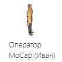
Рисунок 1 – Оператор MoCap в электронном каталоге
- С помощью аддона «MoCap» загружаются нужные анимации для оператора.
- Во вкладке «Программирование» найдите раздел «Эргономика», выберите инструмент «Эргономика» (рис. 2) (рис. 3).
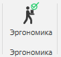
Рисунок 2 – Новый раздел Эргономика во вкладке «Программирование»
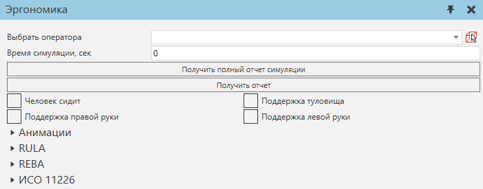
Рисунок 3 – Внешний вид инструмента
- Далее необходимо выбрать оператора. Его можно выбрать с помощью выпадающего списка или с планировки (рис. 3).
- Кнопка «Получить полный отчет симуляции» позволяет запустить симуляции и вывести отчет по всем методам изучения эргономики.
- Кнопка «Получить отчет» позволяет вывести отчет по всем методам изучения эргономики текущей позы оператора.
- Во время симуляции для анализа эргономики используются поддержки различных частей тела – туловища, правой руки, левой руки, также можно задать, что оператор сидит. Для получения анализа текущей позы нужно вручную выставить текущие входные данные – поддержки. Для анализа симуляции используется следующий раздел «Анимации».
- Раздел «Анимации» предназначен для анализа загруженных анимаций из аддона «MoCap» (рис. 5). В этом разделе можно задать входные параметры различных поддержек. Загруженные анимации имеют определенное количество кадров, 24 кадра равняются 1 секунде анимации. Добавленные поддержки можно посмотреть в редакторе программы, они добавлены в виде комментариев. Для добавления поддержки на нужный кадр в нужное место можно воспользоваться редактором программы. При нажатии на PTP оператор поменяет позу. При симуляции текущая поза определяется по зеленому кружку – текущая поза соответствует предыдущему PTP от зеленого кружка в исполняемой подпрограмме.
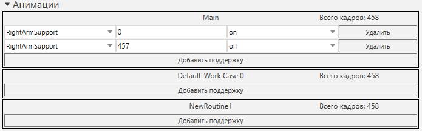
Рисунок 4 – Внешний вид инструмента (Анимации)
- Раздел «RULA» предназначен для выведения результатов оценки позы оператора по методу RULA (рис. 5).
- «Получить отчет симуляции» нужен для получения результата по выбранному методу.
- Выбрав оператора, в разделе RULA выводятся данные о позе человека.
- Далее выбирается уровень нагрузки, а также уровень физической работы (нетребовательная, статическая или репетативная – более 4х раз за 10 минут). Также существует выбор, сидит ли человек.
- Для различных конечностей выводятся параметры со значениями углов, а также со значениями количества очков.
- Также существуют промежуточные итоговые параметры со значениями количества очков.
- Конечный результат оценки позы выводится в самом начале раздела.
Результат |
Описание |
1-2 |
Незначительный риск – никаких действий не требуется |
3-4 |
Низкий риск – могут потребоваться изменения. |
5-6 |
Средний риск – бдительность, улучшения, которые следует рассмотреть. |
6+ |
Высокий риск – требуется немедленная реакция. |
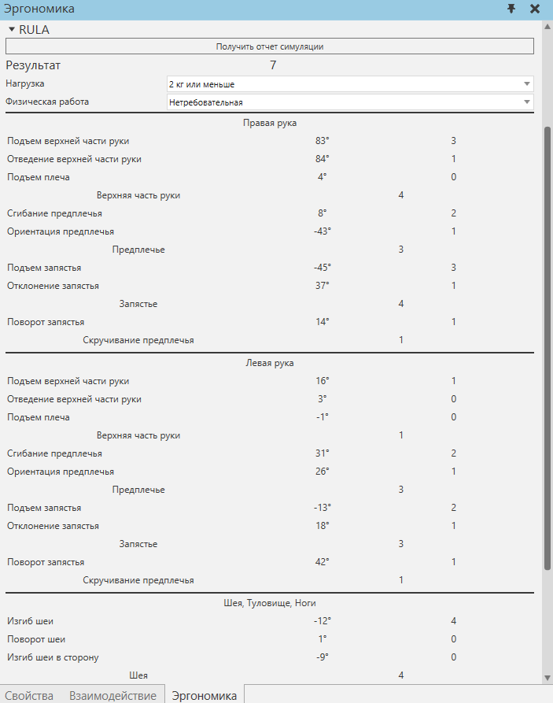
Рисунок 5 – Внешний вид инструмента (RULA) после выбора оператора
- Раздел «REBA» предназначен для выведения результатов оценки позы оператора по методу REBA (рис. 6).
- «Получить отчет симуляции» нужен для получения результата по выбранному методу.
- Выбрав оператора, в разделе REBA выводятся данные о позе человека.
- Далее выбирается уровень нагрузки, усилие, ручной захват, а также активность. Также существует выбор, сидит ли человек.
- Для различных конечностей выводятся параметры со значениями углов, а также со значениями количества очков.
- Также существуют промежуточные итоговые параметры со значениями количества очков.
- Конечный результат оценки позы выводится в самом начале раздела.
Результат |
Описание |
1 |
Незначительный риск – никаких действий не требуется. |
2-3 |
Низкий риск – могут потребоваться изменения. |
4-7 |
Средний риск – бдительность, улучшения, которые следует рассмотреть. |
8-10 |
Высокий риск – необходимы улучшения. |
+11 |
Очень высокий риск – немедленный ответ. |
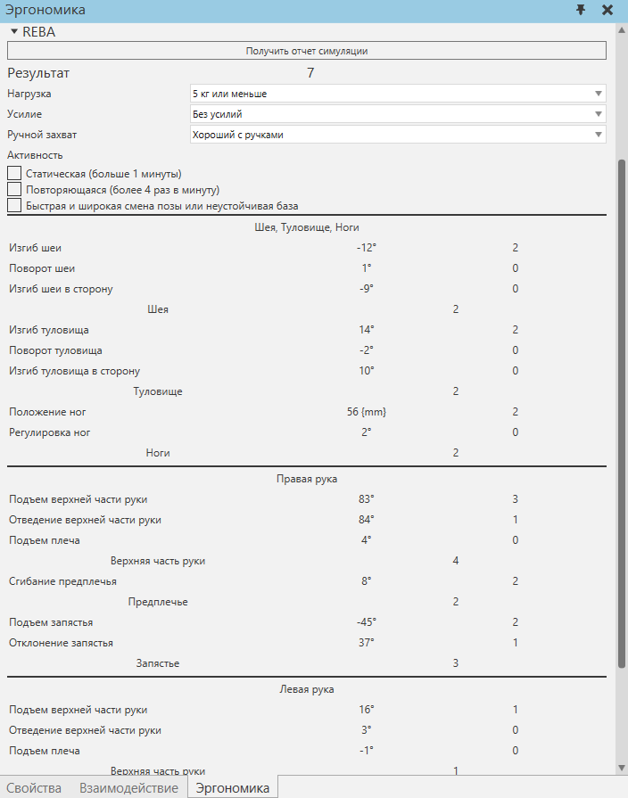
Рисунок 6 – Внешний вид инструмента (REBA) после выбора оператора
- Раздел «ИСО 11226» предназначен для выведения результатов оценки позы оператора по методу ИСО 11226 (рис. 7).
- «Получить отчет симуляции» нужен для получения результата по выбранному методу.
- Для получения результата необходимо нажать на кнопку «Получить полный отчет симуляции» или «Получить отчет симуляции».
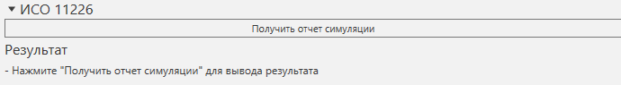
Рисунок 7 – Внешний вид инструмента (ИСО 11226) после выбора оператора
- Кнопка «Получить полный отчет симуляции» и «Получить отчет симуляции» запускает симуляцию на выбранное время симуляции (если 0 – симуляция будет идти бесконечно) и при ее остановке или сбросе выдает график оценки позы на всем промежутке симуляции (рис. 8, 9, 10).
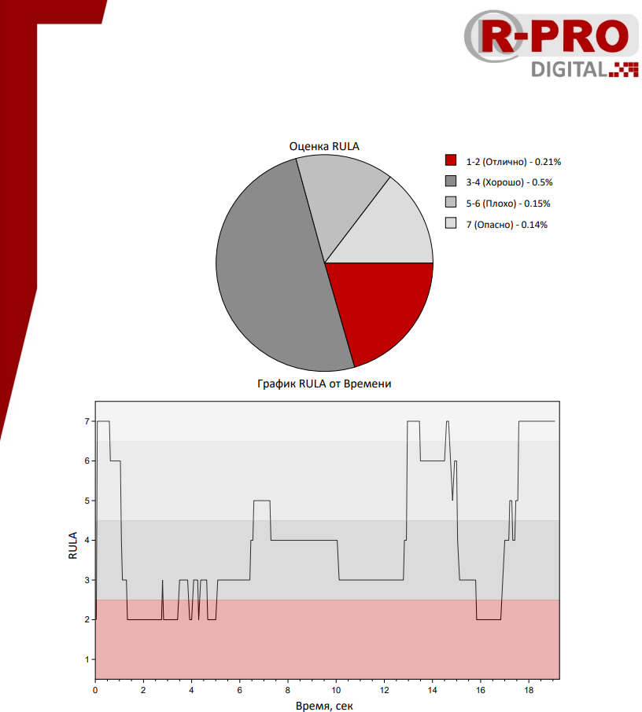
Рисунок 8 – Пример отчета симуляции (RULA)
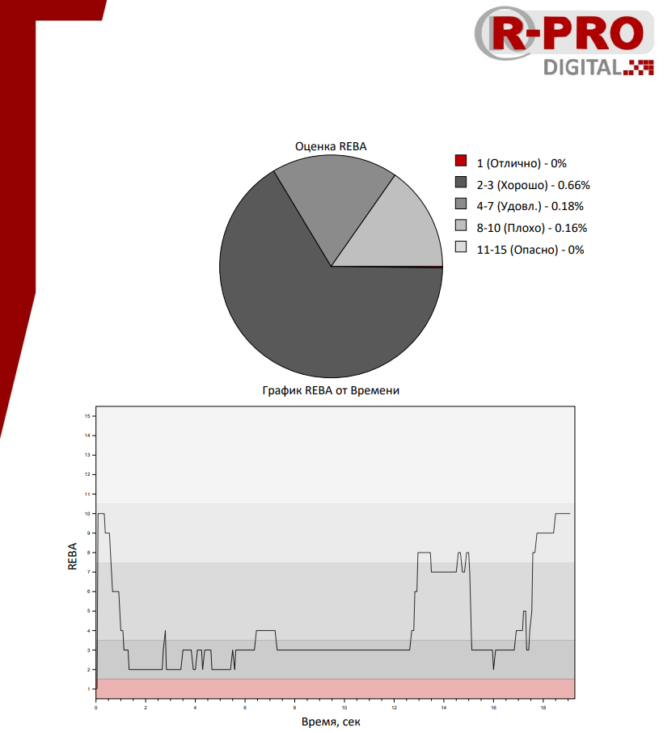
Рисунок 9 – Пример отчета симуляции (REBA)
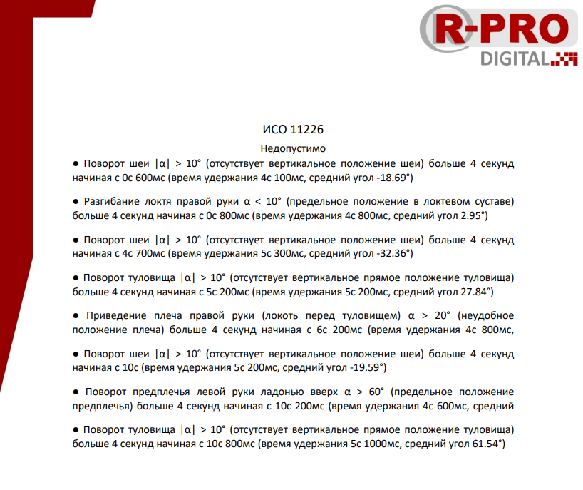
Рисунок 10 – Пример отчета симуляции (ИСО 11226)
- Кнопка «Получить отчет» выдает результат, который представлен на самом инструменте, оценивает текущую позу в данный момент времени. В отчете присутствует более подробное описание выставления конечной оценки (рис. 11 - 14).
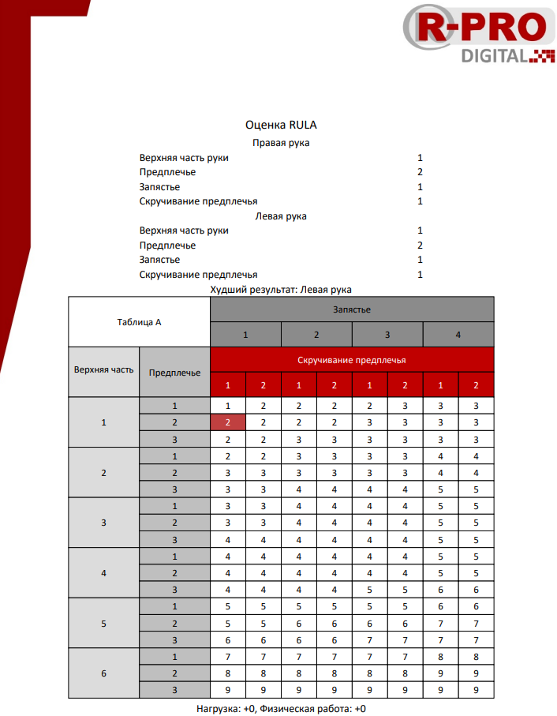
Рисунок 11 – Пример отчета (RULA)
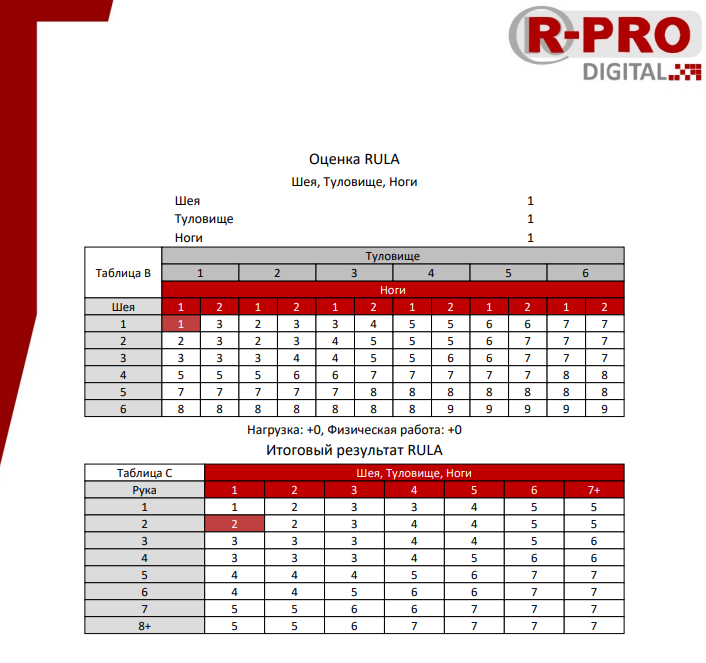
Рисунок 12 – Пример отчета (RULA)
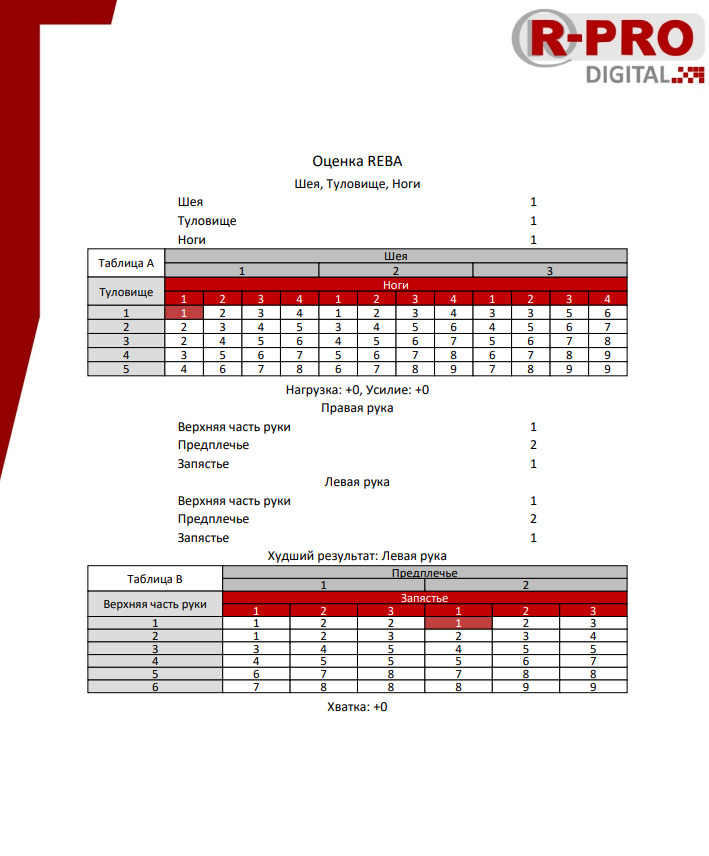
Рисунок 13 – Пример отчета (REBA)
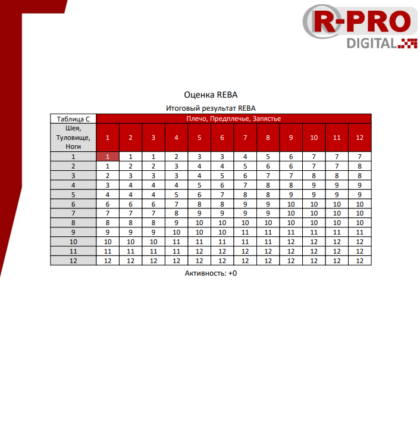
Рисунок 14 – Пример отчета (REBA)